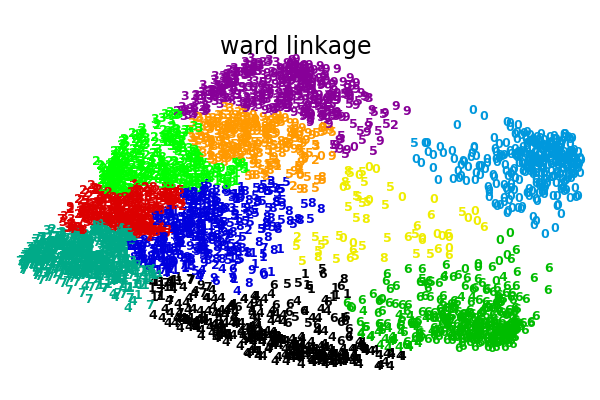
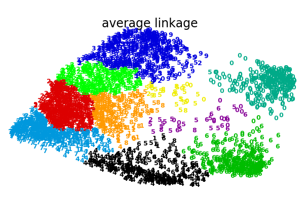
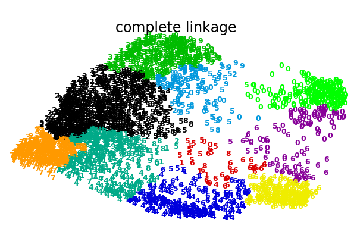
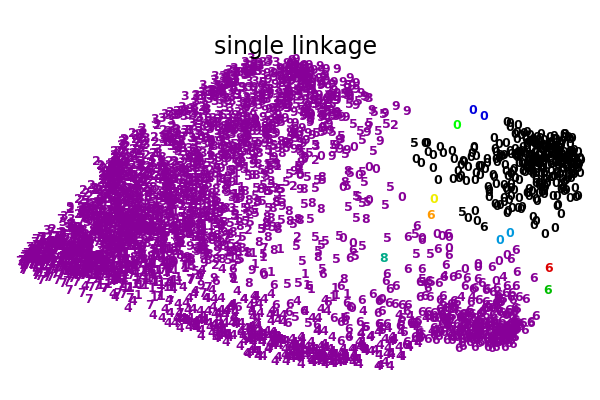

Note
Click here to download the full example code or run this example in your browser via Binder
1.6.10. Various Agglomerative Clustering on a 2D embedding of digits¶
An illustration of various linkage option for agglomerative clustering on a 2D embedding of the digits dataset.
The goal of this example is to show intuitively how the metrics behave, and not to find good clusters for the digits. This is why the example works on a 2D embedding.
What this example shows us is the behavior “rich getting richer” of agglomerative clustering that tends to create uneven cluster sizes. This behavior is pronounced for the average linkage strategy, that ends up with a couple of singleton clusters, while in the case of single linkage we get a single central cluster with all other clusters being drawn from noise points around the fringes.
- 
- 
- 
- 
Out:
Computing embedding
Done.
ward : 0.26s
average : 0.22s
complete : 0.20s
single : 0.09s
# Authors: Gael Varoquaux
# License: BSD 3 clause (C) INRIA 2014
print(__doc__)
from time import time
import numpy as np
from scipy import ndimage
from matplotlib import pyplot as plt
from sklearn import manifold, datasets
X, y = datasets.load_digits(return_X_y=True)
n_samples, n_features = X.shape
np.random.seed(0)
def nudge_images(X, y):
# Having a larger dataset shows more clearly the behavior of the
# methods, but we multiply the size of the dataset only by 2, as the
# cost of the hierarchical clustering methods are strongly
# super-linear in n_samples
shift = lambda x: ndimage.shift(x.reshape((8, 8)),
.3 * np.random.normal(size=2),
mode='constant',
).ravel()
X = np.concatenate([X, np.apply_along_axis(shift, 1, X)])
Y = np.concatenate([y, y], axis=0)
return X, Y
X, y = nudge_images(X, y)
#----------------------------------------------------------------------
# Visualize the clustering
def plot_clustering(X_red, labels, title=None):
x_min, x_max = np.min(X_red, axis=0), np.max(X_red, axis=0)
X_red = (X_red - x_min) / (x_max - x_min)
plt.figure(figsize=(6, 4))
for i in range(X_red.shape[0]):
plt.text(X_red[i, 0], X_red[i, 1], str(y[i]),
color=plt.cm.nipy_spectral(labels[i] / 10.),
fontdict={'weight': 'bold', 'size': 9})
plt.xticks([])
plt.yticks([])
if title is not None:
plt.title(title, size=17)
plt.axis('off')
plt.tight_layout(rect=[0, 0.03, 1, 0.95])
#----------------------------------------------------------------------
# 2D embedding of the digits dataset
print("Computing embedding")
X_red = manifold.SpectralEmbedding(n_components=2).fit_transform(X)
print("Done.")
from sklearn.cluster import AgglomerativeClustering
for linkage in ('ward', 'average', 'complete', 'single'):
clustering = AgglomerativeClustering(linkage=linkage, n_clusters=10)
t0 = time()
clustering.fit(X_red)
print("%s :\t%.2fs" % (linkage, time() - t0))
plot_clustering(X_red, clustering.labels_, "%s linkage" % linkage)
plt.show()
Total running time of the script: ( 0 minutes 25.598 seconds)